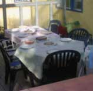
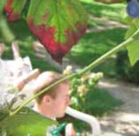

Het Hallehuis
Het Hallehuis is een Centraal Wonen project in Amersfoort. Het bestaat uit zes woongroepen en heeft in totaal ongeveer 45 bewoners. Iedere bewoner beschikt over een eigen huishouden maar deelt daarnaast gemeenschappelijke voorzieningen en ruimten met elkaar.
De bewoners vormen met z'n allen Vereniging Centraal Wonen het Hallehuis. In deze woonvorm draagt iedere bewoner op zijn manier bij aan gezamenlijk wonen in het Hallehuis.

